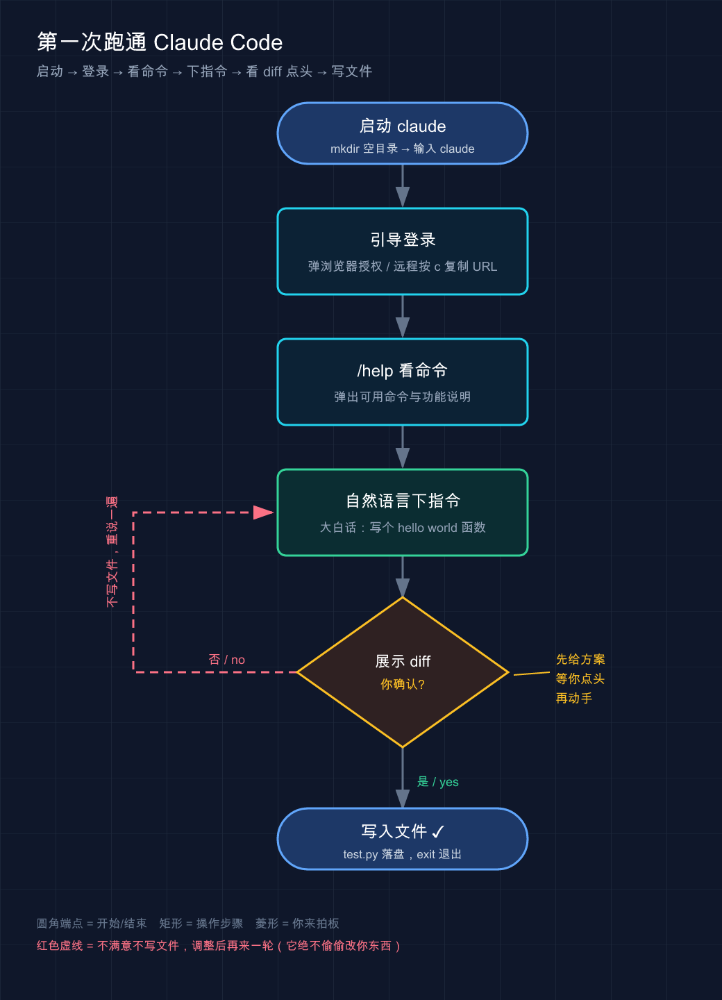

📚 系列导航：上一篇 01 · Claude Code 简介 讲清了它是什么、能干啥。这一篇带你真正把它装到自己电脑上，登录、跑起来，顺带把升级、卸载、踩坑排查一次说透。下一篇 03 · Claude Code 如何工作 掀开盖子看代理循环。
说个常见的糗事。很多人第一次装 Claude Code，随手搜了篇老教程，照着敲 npm install -g @anthropic-ai/claude-code，卡在权限报错上。一着急直接 sudo 怼上去——装是装上了，后面自动更新天天失败，claude doctor 一片红。折腾快一个钟头才反应过来：官方早已把原生脚本列为首选，npm 那条路坑更多，一行 curl 脚本三十秒搞定的事，却硬走了最绕、最容易踩坑的那条道。
说白了，装 Claude Code 本身不难，难的是没人告诉你哪条路是坑。这篇就把每个平台的正路标清楚，让你别重蹈覆辙。
看完这一篇，你会拿到：
- 一条命令在 Mac / Windows / Linux / WSL 上把 Claude Code 装好（带预期输出，能自己验证装没装成功）
- 三种安装方式（官方脚本 / 包管理器 / npm）的对比，知道自己该选哪个
- 登录、升级、卸载的完整操作
- 一份「报错 → 怎么修」的速查表，覆盖九成新手会撞上的坑
01 装之前先搞清楚三件事
别急着敲命令。太多人装到一半才发现「哦这账号还不能用」，白折腾。三件事先确认一下。
第一件：你的电脑够不够格
Claude Code 对机器要求不高，但有几条硬线（以官方为准）：
| 项目 | 要求 |
|---|---|
| 操作系统 | macOS 13.0+ / Windows 10 1809+ / Ubuntu 20.04+ / Debian 10+ / Alpine 3.19+ |
| 内存 | 4 GB 以上可用 RAM |
| 处理器 | x64 或 ARM64 |
| 网络 | 需要联网 |
| 终端 | Bash、Zsh、PowerShell 或 CMD 任一 |
macOS 低于 13.0 的注意：装是能装，但一跑就崩，报 dyld: cannot load 之类的错——老系统不支持二进制用的指令，没有绕过办法，只能升级系统（在还停留在 macOS 12 的机器上，它死活跑不起来，升到 14 才好）。
第二件：你得有个能用的账号
新手最容易忽略的一条：免费版 Claude.ai 账号用不了 Claude Code。
官方要求是 Pro、Max、Team、Enterprise 或 Console（API）账号之一。你平时用网页版 Claude 聊得挺欢，不代表账号能驱动 Claude Code——免费档就是不行。
想用国产模型（DeepSeek、GLM、Minimax）省钱的，账号这步先放着，第 05 篇专门讲接第三方模型。本篇默认你用官方账号。
第三件：你打算从哪儿用它
Claude Code 有三种用法：CLI（命令行） 功能最全、最贴近设计初衷；桌面 App 不用碰终端、下载即用；编辑器集成（VS Code / JetBrains）融进现有开发流。
我的建议：直接学 CLI。 这篇也以 CLI 为主线——它最稳、最通用，学会它后面桌面 App 和编辑器插件都是几分钟的事（第 08-10 篇会讲）。实在抵触终端的，去 https://claude.com/download 下桌面 App，点点就能用。
💡 一句话总结：开装前确认三件事——系统版本够、账号是付费档或 Console、用法选 CLI，这三关过了再敲命令。
02 装好它：每个平台一条命令
先给结论：所有平台都优先用官方安装脚本（官方叫「原生安装 / Native Install」，现在最推荐）。最大好处是——装完后台自动更新，基本不用再操心版本。
类比：原生安装就像应用商店装 App。 点一下「安装」，它自己下载、自己装好、以后自己后台更新；老的 npm 方式更像「下个安装包手动点下一步」——能装，但更新得你亲自来，还容易因权限出岔子。
macOS / Linux / WSL
打开终端，粘这一行：
curl -fsSL https://claude.ai/install.sh | bash
国内网络提示：claude.ai 和下载服务器 downloads.claude.ai 多数情况下需要魔法上网才能稳定访问。装的时候挂上代理，能省掉一大半「卡住 / 超时」的报错。
Windows（原生，不用 WSL）
先确认你在哪个终端里——这是 Windows 用户最常翻车的点，PowerShell 和 CMD 命令不一样：
PowerShell（提示符长这样 PS C:\>）：
irm https://claude.ai/install.ps1 | iex
CMD（提示符是 C:\>，没有前面的 PS）：
curl -fsSL https://claude.ai/install.cmd -o install.cmd && install.cmd && del install.cmd
怎么分辨？ 看提示符开头有没有 PS：有就是 PowerShell，没有就是 CMD。在 PowerShell 里跑 CMD 那条带 && 的命令会报 The token '&&' is not a valid statement separator，反过来在 CMD 里跑 irm 会报 'irm' is not recognized——看到这俩报错换对应命令即可。
开着魔法上网，在 CMD 里装还是卡住 / 超时？ 这是个真坑：多数代理客户端默认的「系统代理」模式，CMD 里的 curl 根本不认——它不读 Windows 的系统代理设置，照样直连，所以代理开了等于没开。装之前先在同一个 CMD 窗口里手动设代理（7890 换成你代理客户端实际的 HTTP 端口，在客户端设置里能看到）：
set http_proxy=http://127.0.0.1:7890
set https_proxy=http://127.0.0.1:7890
设完再跑上面那条安装命令。嫌麻烦还有两条路：换 PowerShell 跑 irm 那条（它默认走系统代理，没这毛病），或在代理客户端里打开 TUN 模式（有的叫「增强模式」「虚拟网卡」），让全部流量强制过代理。
另外，Windows 原生环境推荐顺手装个 Git for Windows，它给 Claude Code 提供 Git Bash；不装会改用 PowerShell 跑命令（也能用，只是部分 Bash 脚本受限）。WSL 则不需要它。
Windows 选 WSL 还是原生？
做 Linux 工具链开发、或想用沙箱功能就走 WSL。官方对照表：
| 选项 | 需要什么 | 支持沙箱 | 什么时候用 |
|---|---|---|---|
| 原生 Windows | 啥都不用（Git for Windows 可选） | ❌ | Windows 原生项目和工具 |
| WSL 2 | 启用 WSL 2 | ✅ | Linux 工具链或要用沙箱 |
| WSL 1 | 启用 WSL 1 | ❌ | WSL 2 用不了时的退路 |
走 WSL 的话，在 WSL 终端里跑上面 macOS/Linux 那条 curl 脚本就行——是在 WSL 里装，不是在 PowerShell 里。
不想碰终端？还有别的路
官方脚本之外还有几条备选道，列个对比按需挑：
| 安装方式 | 命令 | 自动更新 | 我的建议 |
|---|---|---|---|
| 官方脚本 | curl ... | bash |
✅ 后台自动 | 首选，省心 |
| Homebrew（macOS） | brew install --cask claude-code |
❌ 手动 | 已经重度用 brew 管软件的人 |
| WinGet（Windows） | winget install Anthropic.ClaudeCode |
❌ 手动 | 习惯用 WinGet 的人 |
| npm | npm install -g @anthropic-ai/claude-code |
❌ 手动 | 最后才考虑，要先装 Node.js 18+ |
几个坑提前说：
- Homebrew 有两个 cask：
claude-code是稳定版（慢一周、跳过有重大回归的版本），claude-code@latest是最新版，升级各对应brew upgrade claude-code/brew upgrade claude-code@latest。 - WinGet 不自动更新：需定期手动跑
winget upgrade Anthropic.ClaudeCode。 - npm 千万别加
sudo。官方明确警告sudo npm install -g会引发权限问题和安全风险——这正是开头那个最常见的坑。遇到权限报错，正解是改用官方脚本。npm 升级也要用npm install -g ...@latest，别用npm update -g。
💡 一句话总结：闭眼选官方脚本就对了，一条
curl（或 Windows 的irm）解决战斗，还自带后台更新；npm 是下下策，且永远别sudo。
03 验证装没装成功
装完别急着用，花十秒确认一下。打开一个新终端窗口，敲：
claude --version
预期输出是一个版本号，类似（你看到的数字会更新，正常）：
2.1.81 (Claude Code)
看到版本号 = 装成功了。 如果报 command not found: claude 或 Windows 上的 'claude' is not recognized，先别重装——九成是 PATH 没配好（安装目录没进系统搜索路径），第 06 节有修法。
想更详细，官方还给了个体检命令：
claude doctor
它会把安装情况、配置、最近一次更新结果都列出来。装完新机器或遇到抽风，第一反应就该是先跑一遍 claude doctor——比自己瞎猜快多了。
💡 一句话总结：
claude --version出版本号就成了；有任何不对劲，claude doctor是你的第一诊断工具。
04 登录：让它认得你
装好的 Claude Code 还是个「不认识你」的空壳，得登录绑上账号才能干活。在你的项目目录里启动它：
claude
首次启动它会自动引导你登录，也可以进界面后手动触发：
/login
接下来它弹出浏览器页面让你授权，授权完回终端就登录上了。凭据存在本地，下次启动不用再登。换账号再跑一次 /login 即可。
登录卡住了怎么办
最常见的一种：浏览器没自动弹出，或你在远程服务器 / WSL / SSH 里登录——浏览器可能开在另一台机器上，回调回不来。官方办法很简单：
在登录提示界面按 c，把那串 OAuth（开放授权）URL 复制出来，手动粘到浏览器打开，登录完显示一个 code，再把 code 贴回终端即可。
在云服务器上配 Claude Code 时很容易吃这亏，傻等浏览器弹窗半天没反应——远程环境就得走「复制 URL 手动开」这条路。连粘贴都不灵的话，还有个更稳的退路命令：
claude auth login
它从标准输入读取你粘贴的 code，专治交互式提示粘不进去的终端。
一个隐蔽的登录大坑
登录后报 This organization has been disabled，但订阅明明是好的——大概率是 shell 配置里残留了一个旧的 ANTHROPIC_API_KEY，把你的订阅凭据顶掉了。
环境变量里有 API key 时，Claude Code 会优先用 key 而非订阅。解法是清掉它：
unset ANTHROPIC_API_KEY
claude
要永久解决，去翻 ~/.zshrc、~/.bashrc 或 ~/.profile，把那行 export ANTHROPIC_API_KEY=... 删掉。进 Claude Code 后用 /status 能确认当前在用哪种登录方式。
💡 一句话总结：
claude启动会自动引导登录，远程/WSL 环境记住「按c复制 URL 手动开」；登录报组织禁用，先查环境变量里有没有残留的旧 API key。
05 升级与卸载
升级
用官方脚本装的啥都不用做——后台自动更新，下次启动就是新版。想立刻更：
claude update
更新成没成，还是那句 claude doctor。更新渠道可选（写在 settings.json，或在 Claude Code 内用 /config 设）：
{
"autoUpdatesChannel": "stable"
}
"latest"（默认）：新功能一发布就拿到"stable"：用大概一周前的版本，跳过有重大回归的发布——追求稳定选这个
不想要自动更新，在 settings.json 的 env 里设 "DISABLE_AUTOUPDATER": "1" 即可（它只停后台检查，claude update 手动更新仍能用）。Homebrew / WinGet / apt 装的默认都不自动更新，得手动跑对应升级命令（前面坑提示里说了）。
卸载
按你当初的安装方式对应卸载。官方脚本装的：
macOS / Linux / WSL：
rm -f ~/.local/bin/claude
rm -rf ~/.local/share/claude
Windows PowerShell：
Remove-Item -Path "$env:USERPROFILE\.local\bin\claude.exe" -Force
Remove-Item -Path "$env:USERPROFILE\.local\share\claude" -Recurse -Force
其他方式各自对应：Homebrew 用 brew uninstall --cask claude-code，WinGet 用 winget uninstall Anthropic.ClaudeCode，npm 用 npm uninstall -g @anthropic-ai/claude-code。
注意：上面这些只删了程序本体，配置、授权、会话历史还留在 ~/.claude/ 里。如果卸载后 claude 还能跑，多半是你有第二个安装或老版本留下的 shell 别名（第 06 节教你揪出来）。
想彻底清干净（这步不可恢复，设置 / 授权 / MCP 配置 / 会话历史全没）：
# 全局用户设置和状态
rm -rf ~/.claude
rm ~/.claude.json
# 当前项目的本地设置（在项目目录里执行）
rm -rf .claude
rm -f .mcp.json
提醒：VS Code 扩展、JetBrains 插件、桌面 App 也会往 ~/.claude/ 写东西，它们还装着这目录就会被重建——要彻底删得先卸了它们。
💡 一句话总结：官方脚本装的升级靠后台自动、
claude update手动催；卸载按当初的装法对应来，配置文件得单独删、且删了不可逆。
06 报错速查：九成新手会撞的坑
装这东西报错基本逃不掉，但绝大多数有标准解法。把官方文档里最高频的几类整理成速查表——先对症，再下药，别一报错就重装。
| 你看到的报错 | 真正的原因 | 怎么修 |
|---|---|---|
command not found: claude |
安装目录没进 PATH | 把 ~/.local/bin 加进 PATH（见下方） |
syntax error near unexpected token '<' |
安装脚本返回了 HTML 不是脚本 | 多半网络/区域问题，换 Homebrew/WinGet 或稍后重试 |
irm is not recognized |
你在 CMD 里跑了 PowerShell 命令 | 换成 CMD 安装命令，或打开 PowerShell |
'&&' is not valid |
你在 PowerShell 里跑了 CMD 命令 | 换成 PowerShell 的 irm 命令 |
bash is not recognized |
在 Windows 上跑了 Mac/Linux 命令 | 换成 PowerShell 的 irm 命令 |
| 开着魔法上网，CMD 里装仍卡住 / 超时 | CMD 的 curl 不走系统代理，等于直连 |
CMD 里先 set https_proxy=... 再装（见第 02 节），或换 PowerShell / 开 TUN 模式 |
Linux 安装时 Killed |
内存不够（OOM 杀进程） | 加交换空间（见下方），Claude Code 要 4GB+ RAM |
Error loading shared library |
安装器误判了系统 libc 类型，拉了错误变体 | 见官方 musl/glibc 排查 |
登录后 403 Forbidden |
订阅无效 / 账号没权限 | 查订阅状态，或确认 Console 账号有对应角色 |
App unavailable in region |
你所在区域不支持 | 见 支持的国家/地区 |
挑两个最高频的展开说。
坑一：command not found: claude（最常见）
跑 claude 说找不到命令——不是没装上，是装好的目录没进系统搜索路径（PATH）。
类比：PATH 就是系统的门牌号清单。 程序装好好比房子盖好了，但系统只会去「门牌号清单」上登记过的地址挨个找。claude 的房子盖在 ~/.local/bin/，这地址没登记进清单，自然找不到。
修法（macOS 默认是 Zsh）：
echo 'export PATH="$HOME/.local/bin:$PATH"' >> ~/.zshrc
source ~/.zshrc
Linux 大多默认 Bash，把 ~/.zshrc 换成 ~/.bashrc 即可。改完验证：
claude --version
出版本号就修好了。Windows 用户则把 %USERPROFILE%\.local\bin 加进用户 PATH 环境变量，然后重启终端。
坑二：揪出「打架」的多个安装
如果先 npm 装过又官方脚本装一遍，可能同时存在好几个 claude，版本对不上、行为诡异。先看看 PATH 上有几个：
which -a claude
列出来不止一个的话，只留官方脚本那个（~/.local/bin/claude），其余删掉：
# 卸掉 npm 全局安装
npm uninstall -g @anthropic-ai/claude-code
# 删掉老版本的本地 npm 安装
rm -rf ~/.claude/local
很多时候 which -a claude 一跑，就会发现 npm 和原生各装了一个，删掉 npm 那个、理顺 PATH，瞬间清静。
💡 一句话总结：报错先查表对因，别条件反射重装；找不到命令多半是 PATH，行为诡异多半是装了好几个在打架，
which -a claude一照便知。
07 动手：从零跑通第一次
光装好不算数，实际跑一遍确认链路通。这个最小流程不依赖已有项目，新建个空目录就能做。
第一步，建测试目录并进去，启动 Claude Code：
mkdir claude-test && cd claude-test
claude
第一次启动会引导你登录（按第 04 节走完），登录后看到欢迎界面。
第二步，在输入框里敲 /help，看看有哪些命令：
/help
预期：弹出一份可用命令和功能说明的列表。直接打一个 /，还会弹出所有命令的自动补全。
第三步，让它干件实事——直接用大白话下指令（不用记命令格式）：
在 test.py 文件里写一个打印 hello world 的函数
预期行为：Claude Code 会先把要改的代码以 diff（差异对比）摆给你看，等你确认（选 yes）才真正写文件。这是它的核心工作流——先给方案、等你批、再动手，不偷偷改你东西。
确认后，目录里就多了个 test.py。退出：
exit
到这步，你已经完整跑通了「装 → 登录 → 给指令 → 它改文件 → 你确认」的全流程。第一次看到它自己写出代码、还停下来等你点头那一下，挺有「这玩意儿真能干活」的实感——头一回跑通的时候，多少会有点小兴奋。

这张图把上面四步串成一条线：从 claude 启动、登录、/help 看命令、大白话下指令，到最关键的一环——它先把 diff 摆给你看、等你点头（是）才写文件；你说不（否）它就不写，调整后再来一轮，全程绝不偷偷改你的东西。
💡 一句话总结：新建空目录就能跑通全流程——
claude启动登录、/help看命令、大白话下指令、看 diff 点 yes，这套「先给方案再动手」是它最核心的节奏。
08 小结
这一篇把「装好并用起来」彻底过了一遍：
- 装前确认三件事：系统版本够、账号是付费档或 Console、用法选 CLI。
- 认准官方脚本：Mac/Linux/WSL 用
curl，Windows 分清 PowerShell（irm）和 CMD；npm 是下策，永远别sudo。 - 验证用
claude --version，体检用claude doctor；登录报组织禁用先查残留的ANTHROPIC_API_KEY。 - 报错先查表对因：找不到命令查 PATH，行为诡异查多重安装。
你现在应该能在自己机器上独立装好 Claude Code、登录、跑通第一个例子，遇到常见报错也知道往哪查。
下一篇 03 · Claude Code 如何工作——掀开盖子看里面：你刚那句「写个 hello world 函数」，是怎么从一句话变成一次精准文件修改的？背后是一套叫「代理循环」的机制，搞懂它，你才算真会用 Claude Code，而不只是会敲命令。
留个问题：你刚让它写
test.py时，它是先看了目录里有什么文件、还是直接动手写的？这个差别，正是下一篇的切入点。
装好只是拿到了工具，会用它的「思路」才是真本事——下一篇见。